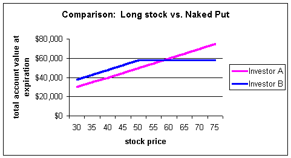

The strategy called "systematic put writing" or sometimes just "systematic writing" is a hedged variation of naked, or uncovered, put writing. This strategy will be appealing to investors ranging from conservative to speculative. If you like writing naked puts, this strategy will be of great interest to you. If you think you would never attempt it, you may change your mind!
Before we start, we should clarify some misconceptions about naked put writing. When you sell a put, you are effectively acting as an insurance company by entering into an agreement to potentially buy stock at a fixed price over a given amount of time. For this protection, the buyer will pay you a premium. It's a mutually beneficial relationship; you are willing to insure their stock and they are willing to pay for the peace of mind.
Many investors shy away from naked puts because of the large downside risk, to a stock price of zero, if the stock should fall. But these same investors are usually willing to buy stock and hold it. Let's see what the real risk is.
Say we have two investors, A and B. A only buys stock and B only sells naked puts. In the eyes of many investors, A is conservative, and B is a loose cannon that speculates with options.
A and B each have $50,000 in their accounts.
XYZ stock is selling for $50 per share. A buys 1,000 shares but B sells 10 $50 puts, with 3 months of time, for $8. Investor A now has $50,000 worth of stock and no cash while B has $58,000 cash ($50,000 cash + $8,000 from sale of put) and no stock. What happens at expiration?
If the stock is down, say $30, A's account will be worth $30,000 but B's will be worth $38,000. Why? Because B started with $58,000 but is forced to buy stock 3 months later for $50,000 due to the option assignment. He will pay $50,000 but receive stock worth $30,000. His transactions are:
Portfolio value at start: +$58,000
Pays for option assignment: -$50,000
Receives stock: +$30,000
Net account value: +$38,000
In fact, B's total account value will always dominate A's for all stock prices at $58 ($50 strike price plus $8 premium for the put) or below. Any stock price above $58 at expiration, B's account will be worth $58,000 and no more. From a profit and loss standpoint, the two accounts look like this at expiration:
Investor B's account dominates A's for all prices below $58. His tradeoff for this privilege is that he does not participate in any upside potential of the stock if it moves above $50. Investor B is giving up upside potential in exchange for a downside hedge. In addition, B has deferred his payment for buying the stock by three months in exchange for the premium. So, B actually appears conservative compared to A, the long stock position!
If you read our sections on "Profit and Loss Diagrams" and "Synthetic Options," you will understand that a naked put is really nothing more than a covered call in disguise. They are synthetic equivalents.
So, the point of all this is to understand that naked put writing really isn't as speculative or dangerous as some would think. This is assuming you are writing puts on stock you would buy regardless, not because the premiums are high!
Hopefully you are now not as reluctant to write naked puts. If so, continue reading about how systematic writing may benefit you.
This strategy is appealing in a number of ways. It allows investors to sell naked puts but adds a couple of new dimensions. First, it allows the investor to dollar cost average into the stock. Second, it allows for the sale of a covered straddle thereby giving the investor one more additional option premium to further reduce the downside risk.
The systematic writing recipe:
Step 1:Start by writing puts on half the amount of shares in which you are willing to buy (for example, if you are willing to buy 1,000 shares, write 5 puts).
Note: Repeat step 1 until you are assigned. Again, it is very important to use this strategy only for stocks you would be willing to buy at the strike price regardless.
Step 2:Once you are assigned in step 1, write covered straddles (sell a call and sell a put). In this example, the investor will write 5 calls and 5 puts. The position is considered covered, because the investor can always deliver the shares if assigned on the short calls.
Step 3:If the investor gets assigned from the calls in step 2, start with step 1 again. If assigned on the puts again, write covered calls against the entire position.
Let's use our two investors above, A and B, and see how they would fare using naked puts versus systematic writing.
Investor A is now convinced that naked put writing may not be so bad. He likes the stock and would be willing to buy 1,000 shares so he sells 10 $50 puts for $8. The time to expiration is a matter of preference, but all else equal, investors are usually better selling shorter-term options.
Investor B uses the systematic strategy. He will write puts on one-half of the position, to represent the 500 shares he's willing to purchase. So he writes only 5 of the contracts for $8.
At expiration, the stock is trading for $35. While A is at least hedged by the amount of the original premium, he's not willing to buy any more stock because he is now long 1,000 shares -- his original limit -- from the assignment. His cost basis is $42 per share ($50 for the stock less $8 for put premium). He must sit and be patient for the stock to rally. While it is possible for A to write calls at this point, if the stock is down far enough, this strategy may not be sufficient, as there may be no premium in a $45 strike that would be necessary to bring him to a profit if called away.
Because B is using the systematic principle, he bought only 500 shares from the put assignment. Now he enters the second step of the strategy: writing covered straddles. Investor B will now write 5 $35 puts (assume they are $5) and 5 $35 calls (assume they are $6).
Investor B will bring in an additional $2,500 for the puts and $3,000 for the calls.
At this point, two only two things can happen for the stock: It will either be above or below $35 at expiration. If the stock is above $35 (the strike price) at expiration, B will have his shares called away due to the short call option. But that's okay, as we will see shortly that his average cost is only $33, and he will make 2 points profit. But, let's assume the stock is down again to $30. Investor B will buy his second lot of 500 shares at a price of $35, the strike of the short put.
Investor A's cost basis is $50 for the stock, less $8 for the put, for a total of $42. Investor B's cost basis is effectively $42-1/2 for the purchase of stock alone (500 shares at $50 and 500 shares at $35). But in addition, B took in $4,000 for the original put sale, and $5,500 for the covered straddle (500 * $5 for the puts and 500 * $6 for the calls). The total proceeds from the options is $9,500, for a total cost basis of $33,000 or $33 per share for investor B.
Now, investor A has a cost basis of $42, and B has one of $33 with the stock trading at $30.
Notice the large difference in cost basis between the two investors. The majority of the difference in costs is due to B being able to average into the stock. He bought 500 shares at $50 and 500 at $35 with 3 option premiums along the way to boot.
The third step for the systematic writing would require B to write 10 calls (covered call position) against his 1,000 shares. The market is at $30 and his average cost is $33. Say he can sell 10 $30 calls trading at $5 to bring his cost basis to $28 per share. If he gets assigned, he will sell 1,000 shares at $30. If not, he will continue to write calls against the entire position until called out. At that point, he will look to start with step 1 again in the strategy.
Notice too that, although a two-point profit may not seem like such a big deal, the stock has fallen 34% from $50 to $33. There is not much an investor who paid $50 for the stock can do at this point. But our systematic writer is able to potentially capture a two-point profit despite the fall.
This is an outstanding strategy for naked put writers; especially for stocks you expect to be volatile. The average cost basis on your stock will be greatly reduced if you are assigned on the short put written at the time of the covered straddle.
The strategy is very versatile. Investor B, in the above example, could have written calls and puts with different strike prices (called a strangle or combo) for step 2 instead of the covered straddle. Investors can select different time frames or strikes to meet their needs. You can even mix and match some of the steps. For example, if you are very bullish on the stock, you may elect to enter step 2 initially. This way you own half the shares you are willing to purchase and have a short put to provide a small hedge. Now, if the stock runs to the upside, at least you have some shares to fully participate in the rally unlike the investor who starts with step 1 and only writes puts on half the position.
Again, it should be emphasized that naked put writing can actually be viewed as a conservative strategy if you are writing puts on stock you would be willing to buy at the strike price regardless. If, however, you are writing puts on stocks solely for a high premium that is present and would rather not own the stock, be aware that this is an extremely speculative position and you should invest accordingly.
Hopefully this strategy adds some interesting insights as to how valuable options can be for conservative and speculative investors alike.